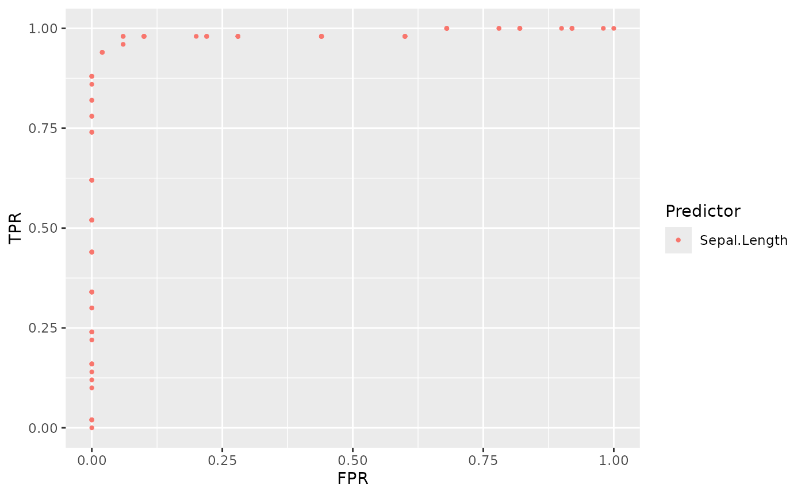
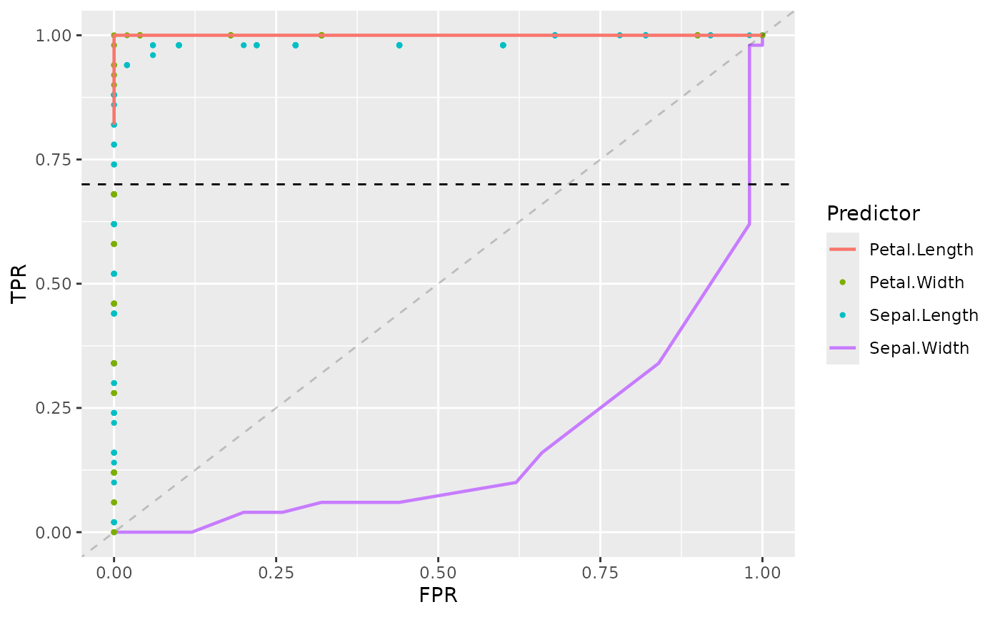

Introduction to ROCnGO
ROCnGO.RmdROCnGO is an R package which allows to analyze the performance of a classifier by using receiver operating characteristic () curves. Conventional ROC based analyses tend to just use area under curve () as a metric of global performance, besides this functionality, the package allows deeper analysis options by calculating partial area under curve () when prioritizing local performance.
Furthermore, ROCnGO implements different transformations described in literature which:
- Make interpretation easier.
- Allow to work with ROC curves which are not completely concave or not at all (improper).
- Provide additional discrimination power when comparing classifiers with identical local performance (equal ).
This document provides an introduction to ROCnGO tools and workflow to study the global and local performance of a classifier.
Data
To explore basic tools in the package we will be using
iris dataset. The dataset contains 5 variables for 150
flowers of 3 different species: setosa, versicolor and
virginica.
For the purpose of simplicity, we will only work with a subset of
iris considering only setosa and
virginica species. In the following sections, the performance
of different variables to classify cases in the different species will
be evaluated.
# Filter cases of versicolor species
iris_subset <- as_tibble(iris) %>% filter(Species != "versicolor")
iris_subset
#> # A tibble: 100 × 5
#> Sepal.Length Sepal.Width Petal.Length Petal.Width Species
#> <dbl> <dbl> <dbl> <dbl> <fct>
#> 1 5.1 3.5 1.4 0.2 setosa
#> 2 4.9 3 1.4 0.2 setosa
#> 3 4.7 3.2 1.3 0.2 setosa
#> 4 4.6 3.1 1.5 0.2 setosa
#> 5 5 3.6 1.4 0.2 setosa
#> 6 5.4 3.9 1.7 0.4 setosa
#> 7 4.6 3.4 1.4 0.3 setosa
#> 8 5 3.4 1.5 0.2 setosa
#> 9 4.4 2.9 1.4 0.2 setosa
#> 10 4.9 3.1 1.5 0.1 setosa
#> # ℹ 90 more rowsGlobal performance
Calculate ROC curve
The foundation of this type of analyses implies to plot curve of a classifier. This type of curves represent the classifier probability of correctly classify a case with a condition of interest, also known as true positive rate or (), and the complementary probability of correctly classify a case without the condition; also known as false positive rate, , or , ().
When working with a classifier that returns a series of numeric values, it can be complex to say when it is classifying a case as having the condition of interest (positive) or not (negative). To solve this problem, curves represent points considering hypothetical thresholds () where a case is considered as positive if the its value is higher than the threshold ().
Curve points can be calculated by using roc_points(). As
most functions in the package it takes a dataset, a data frame as its
first argument. The second and third argument refer to variables in the
data frame, corresponding the variable that will be used as a classifier
and the response variable we want to predict.
For example, we can calculate points for Sepal.Length as a classifier of setosa species.
# Calculate ROC points for Sepal.Lenght
points <- roc_points(
data = iris_subset,
predictor = Sepal.Length,
response = Species
)
points
#> # A tibble: 101 × 2
#> tpr fpr
#> <dbl> <dbl>
#> 1 1 1
#> 2 0.98 1
#> 3 0.92 1
#> 4 0.92 1
#> 5 0.92 1
#> 6 0.9 1
#> 7 0.82 1
#> 8 0.82 1
#> 9 0.82 1
#> 10 0.82 1
#> # ℹ 91 more rows
# Plot points
plot(points$fpr, points$tpr)As we may see, Sepal.Length doesn’t perform very well predicting when a flower is from setosa species, in fact it’s the other way around, the lower the Sepal.Length it’s more probable to have a setosa flower. This can be tested if we change the condition of interest to virginica.
Changing condition of interest
The condition of interest is automatically set to the first value in
levels(response), so we can change this value by changing
the order of levels in data.
# Check response levels
levels(iris_subset$Species)
#> [1] "setosa" "versicolor" "virginica"
# Set virginica as first value in levels
iris_subset$Species <- fct_relevel(iris_subset$Species, "virginica")
levels(iris_subset$Species)
#> [1] "virginica" "setosa" "versicolor"
# Plot ROC curve
points <- roc_points(
data = iris_subset,
predictor = Sepal.Length,
response = Species
)
plot(points$fpr, points$tpr)Local performance
Sometimes a certain task may requiere prioritize e.g. high sensitivity over global performance. In these scenarios, it’s preferable to work in specific regions of curve.
We can calculate points in a specific region using
calc_partial_roc_points(). Function uses same arguments as
roc_points() but adding lower_threshold,
upper_threshold and ratio, which delimit
region in which we want to work.
For example, if we require to work in high sensitivity conditions, we could check points in region of .
# Calc partial ROC points
p_points <- calc_partial_roc_points(
data = iris_subset,
predictor = Sepal.Length,
response = Species,
lower_threshold = 0.9,
upper_threshold = 1,
ratio = "tpr"
)
p_points
#> # A tibble: 54 × 2
#> partial_tpr partial_fpr
#> <dbl> <dbl>
#> 1 0.9 0.00667
#> 2 0.94 0.02
#> 3 0.94 0.02
#> 4 0.94 0.02
#> 5 0.96 0.06
#> 6 0.98 0.06
#> 7 0.98 0.06
#> 8 0.98 0.1
#> 9 0.98 0.1
#> 10 0.98 0.1
#> # ℹ 44 more rows
# Plot partial ROC curve
plot(p_points$partial_fpr, p_points$partial_tpr)Automating analysis
Performance metrics
When working with a high number of classifiers, it can be difficult
to check each
individually. In these scenarios, metrics such as
and
may present more interest. Thus, by using the function
summarize_predictor() we can obtain an overview of the
performance of a classifier.
For example, we could consider the performance of Sepal.Length over a high sensitivity region, , and high specificity region, .
# Summarize predictor in high sens region
summarize_predictor(
data = iris_subset,
predictor = Sepal.Length,
response = Species,
threshold = 0.9,
ratio = "tpr"
)
#> # A tibble: 1 × 5
#> auc pauc np_auc fp_auc curve_shape
#> <dbl> <dbl> <dbl> <dbl> <chr>
#> 1 0.985 0.0847 0.847 0.852 Concave
# Summarize predictor in high spec region
summarize_predictor(
data = iris_subset,
predictor = Sepal.Length,
response = Species,
threshold = 0.1,
ratio = "fpr"
)
#> # A tibble: 1 × 5
#> auc pauc sp_auc tp_auc curve_shape
#> <dbl> <dbl> <dbl> <dbl> <chr>
#> 1 0.985 0.0954 0.976 0.973 ConcaveBesides and , the function also returns other partial indexes derived from which provide a better interpretation of performance than .
Furthermore, if we are interested in computing these metrics
simultaneously for several classifiers summarize_dataset()
can be used.
# Select classifiers to compute
classifiers <- c("Sepal.Length", "Sepal.Width", "Petal.Width", "Petal.Length")
# Summarize classifiers in high sens region
summarize_dataset(
data = iris_subset,
predictors = classifiers,
response = Species,
threshold = 0.9,
ratio = "tpr"
)
#> $data
#> # A tibble: 4 × 6
#> identifier auc pauc np_auc fp_auc curve_shape
#> <chr> <dbl> <dbl> <dbl> <dbl> <chr>
#> 1 Sepal.Length 0.985 0.0847 0.847 0.852 Concave
#> 2 Sepal.Width 0.166 0.0016 0.0160 0.9 Hook under chance
#> 3 Petal.Width 1 0.1 1 1 Concave
#> 4 Petal.Length 1 0.1 1 1 Concave
#>
#> $curve_shape
#> # A tibble: 2 × 2
#> curve_shape count
#> <chr> <int>
#> 1 Concave 3
#> 2 Hook under chance 1
#>
#> $auc
#> # A tibble: 2 × 3
#> # Groups: auc > 0.5 [2]
#> `auc > 0.5` `auc > 0.8` count
#> <lgl> <lgl> <int>
#> 1 FALSE FALSE 1
#> 2 TRUE TRUE 3Plotting
As we have seen, by using roc_points() we can plot
curve. Nevertheless, these plots can be generated using
plot_*() and add_*() functions, which
furthermore, provide options to customize plot for classifier
comparison.
For example, we can plot points of Sepal.Length in this way.
# Plot ROC points of Sepal.Length
sepal_length_plot <- plot_roc_points(
data = iris_subset,
predictor = Sepal.Length,
response = Species
)
sepal_length_plot
Now by using + operator we can add further options to
the plot. For example, including chance line, adding further
points of other classifiers, etc.
sepal_length_plot +
add_roc_curve(
data = iris_subset,
predictor = Sepal.Width,
response = Species
) +
add_roc_points(
data = iris_subset,
predictor = Petal.Width,
response = Species
) +
add_partial_roc_curve(
data = iris_subset,
predictor = Petal.Length,
response = Species,
ratio = "tpr",
threshold = 0.7
) +
add_threshold_line(
threshold = 0.7,
ratio = "tpr"
) +
add_chance_line()